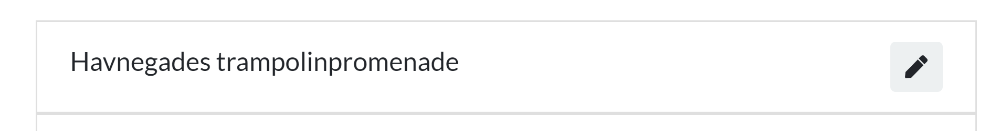

<section>
  <div class="block" data-type="image" data-name="image-1" data-keep-ratio style="left:102.4px;top:289.167px;width:1075.2px;height:141.667px;z-index:10">
    
  </div>
  <div class="block" data-type="shape" data-name="shape-1" data-shape="rect" data-fill="rgba(0, 0, 0, 0)" data-stroke="#ff9900" data-stroke-width="3" data-radius="0" data-animate="fade-in" data-animate-duration="0.6" data-animate-delay="0.6" style="left:137.435px;top:307.136px;width:1019.52px;height:105.729px;z-index:11"></div>
  <div class="block" data-type="shape" data-name="shape-2" data-shape="rect" data-fill="rgba(0, 0, 0, 0)" data-stroke="#00ff00" data-stroke-width="3" data-radius="0" style="left:1047.85px;top:320.327px;width:81.745px;height:79.3466px;z-index:12;filter:drop-shadow(rgba(0, 0, 0, 0.5) 2px 2px 5px)"></div>
  <div class="block" data-type="shape" data-name="shape-3" data-shape="rect" data-fill="rgb(255, 255, 255)" data-stroke-width="0" data-radius="0" data-animate="fade-out" data-animate-duration="0.6" data-animate-delay="0" data-animate-on="shape-1" style="left:1015.41px;top:311.63px;width:132.111px;height:94.741px;z-index:13"></div>
  <aside class="notes">So we have a common way to display a playground in a list. But what if we want actions?! And different actions in different parts of the application? Click for animation</aside>
</section>
